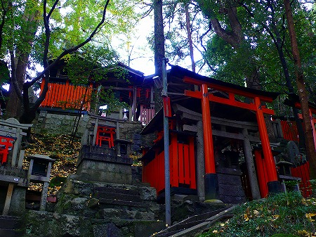

京都である。洛南である。
伏見稲荷大社である。
言わずと知れた
全国のお稲荷さんの総本社だ。
門前町にはずらりと稲荷寿司を売る店が並び、大変なにぎわいよう。
しかしそんな伏見稲荷には
もうひとつの顔が存在するのだ。
下の絵図をご覧いただこう。
下半分がいわゆる伏見稲荷の本殿や社務所などがあるオフィシャルな部分。
ここで問題にしたいのは上半分。
そこに
稲荷信仰の深い深い世界が繰り広げられているのだ。
あまりにもお伝えしたいことが多すぎるので、本殿エリアの紹介はばっさりと割愛させていただきますよ。
有名な千本鳥居。大勢の観光客や参拝客が押し寄せている。

千本鳥居を抜けるとそこは奥社。お寺でいうところの奥の院だな。
お稲荷さんだけにキツネの絵馬がズラリと。
というわけで伏見稲荷のオフィシャルな神社としてはこの辺りでおしまい。
さて、問題の「その先」へ進もう。
地図を見ると
山中に鳥居が延々と連なっている。
これが伏見稲荷の本当の顔、稲荷山三ヶ峰の
お山巡りなのである。
人のいない鬱蒼とした森の中を鳥居が延々と続いている。
山の緑と鳥居の朱のコントラストが激しく目がチカチカしてくる。
森の中なのに鳥居が連続しているので道を外れて迷う心配はない。
そのうち鳥居の列が途切れ、大小の社が密集しているエリアに出る。

いわゆるオフィシャルな本殿がある辺りの整然とした雰囲気と比較するとかなり雑然としている。
本殿や門前、奥社周辺の観光客が殺到するエリアが表の顔とすれば、このエリアは明らかに
伏見稲荷の別の顔、裏の顔といえよう。
それぞれの社には小さな鳥居がたくさん奉納されている。
このような小さな社が密集しているエリアが山中に数多く点在しているのだ。
これらの小社は
御塚と呼ばれている。
この御塚、全国の団体や個人が建てたものなのだが、これにはチト訳がある。
明治初期の神仏分離の際、様々な民間信仰や流行神、あるいは神仏混合の宗教が神道か仏教、どちらかにカテゴライズせよとの選択を迫られた。
その際、多くの教団が稲荷信仰に組み込まれ、伏見稲荷の裏山にそれぞれの拠点を構えたのが御塚なのだ。
明治以降その数は増え続け現在では1万以上あるとか。
ミニ鳥居には見たこともない神号（カミサマの名前）が書かれている。
つまりここにある御塚は稲荷信仰の形式を借りてはいるが、厳密には別の宗教だったりする、というわけ。
もちろん奉納されているミニ鳥居の数も物凄い。
鳥居の向こうには洛南の街が。
さらに進むとどんどん山が深くなってくる。でも鳥居の列は延々と続く。
鳥居のすきまからは時折神々しい光が差してくる。
鳥居に導かれながら深い森を歩いていくと所々に御塚の密集している場所（奉拝場）がある。
そんな奉拝場の中でも最大規模なのが御膳谷の御塚群だ。
谷筋に延々と御塚が並ぶその光景からは、現代の我々が考える神道とは別の
「もうひとつの神道」の姿が垣間見えてくる。
昼なお暗い谷底に朱色の鳥居だけが毒々しい色彩を放っている。
そんな奉拝場の一画で一心に祝詞をあげる集団がいた。
全員靴を脱ぎ、一心不乱に祝詞を唱える様子は傍から見ててもただ事とは思えな雰囲気を醸し出していた。
これもまた正統な神道とは違う信仰なのだろう。
朱と緑のせめぎ合いはこのまま永遠に終わらないのでは、と思えるほど延々延々と続く。
そのほとんどが同じような形式の御塚だが、いわば
全部別々の宗教なのだ。
「日本人の多くは神道と仏教を信仰してます」というオフィシャルな見解が空々しく思えてくる。
日本にはもっと多種多様な宗教が数多く渦巻いているのだ。
我々はそれが見えていないだけなのだ。
あるいは見ようとしないだけなのか。
ようやく山を下り、里に近いところに戻ってきた。
鳥居の列を抜けるとこれまた猛烈な鳥居のモッシュ状態。
ミニ鳥居に書かれている神号はもちろん見たことも聞いたこともないもの。
つまり流行神か民間信仰の神霊を祀ってあるのだろう。
石碑に刻まれた神号も見たことない神様の名前ばかり。
先ほどのお山巡りは神仏分離の頃に成立した御塚だが、山を抜けて里に近づくとさらに近年に成立した霊場が乱立している。
そんな中で異彩を放っていたのがこの煙まみれの霊場。
足腰のカミサマだそうな。煙くて何が何だか判らなかったけど。

運動大神と道引大神。
こちらのカミサマも良く判らないが。
出自も経歴もまるで異なる様々な信仰が伏見稲荷の名の下に集約されているのだ。
シュールとしか言いようがない。
林の中に不思議なものを発見。
木に黒いビニールシートを被せ、その水分を採取している。
お稲荷さんの御神徳をこの水分から得ようというのだろうか。
この
なりふり構わぬ感じが逆に凄く宗教的なものを感じた。
普通、信仰って荘厳だったり深遠だったりするでしょ。
でも本当にリアルな信仰って実は切羽詰ってて、即物的で、近視眼的なケースが多いんだな。
「病弘法欲稲荷」というフレーズがあるようにそもそも稲荷信仰は現世利益の性格が強い信仰といえよう。
そんな伏見稲荷に民間信仰や流行神が集まってきたのはある意味で必然的な流れだったのではなかろうか。
道教や仏教系の新興宗教も軒を並べていて
混沌とした宗教モザイク地帯と化している。
日本には八百万のカミサマがいるというのを心底実感できる。
ここは神道が国教化されていく上ではみ出していった宗教の集積場のような場所だ。
伊勢神宮や出雲大社といったスクエアな神社では出会えない
生な信仰の姿がここにはあるといえよう。
明治初期の宗教ロンダリング政策が図らずもこのような光景を生み出してしまったのは何とも皮肉な結果である。
しかし私にとってはウッシッシな光景であるので、遅ればせながら明治政府に感謝しときますよ。